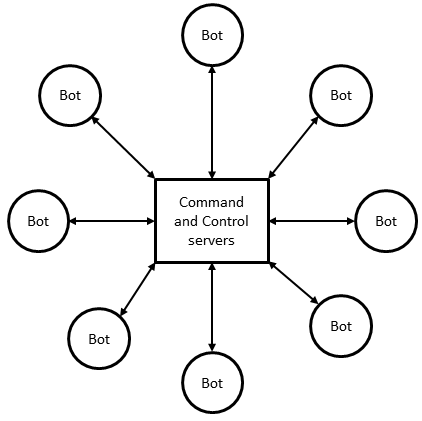
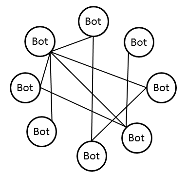
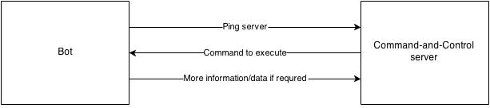
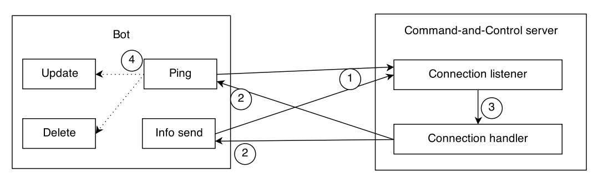
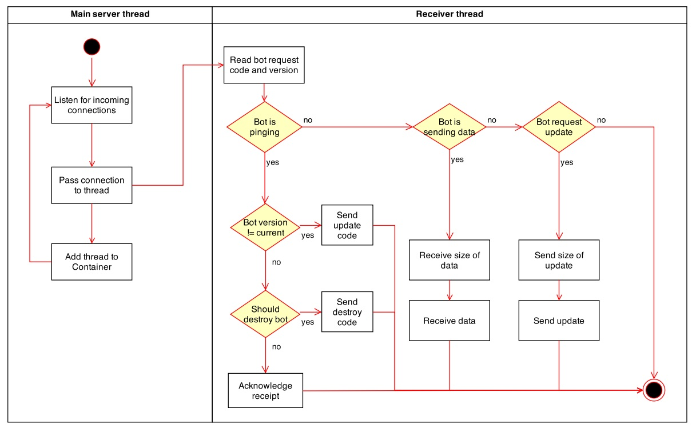

An information-gathering botnet for private cloud environments
Problem statement
Companies can not easily monitor private cloud environments without changing the underlying architecture of the cloud.
In this presentation
Overview of botnets
Overview of cloud computing
Solution
Overview
Architecture
Program flow
Evaluation of solution
Botnet
A network of compromised computers that is controlled by an attacker (the botmaster).
Botnet topologies


Botnet detection and defence
Same propagation mechanism as other malware
Network monitoring
Honeypots
Botnet detection and defence (II)
Remove servers
Hijack a sever
Index poisoning
Sybil attack
Cloud computing
Cloud computing is a model for enabling ubiquitous, convenient, on-demand network access to a shared pool of configurable computing resources (e.g., networks, servers, storage, applications, and services) that can be rapidly provisioned and released with minimal management effort or service provider interaction. This cloud model is composed of five essential characteristics, three service models, and four deployment models.
Cloud essential characteristics
On-demand self service.
Broad access
Resource pooling
Rapid elasticity
Measured service
Cloud service models
Software as a Service
Platform as a Service
Infrastructure as a Service
Deployment models
Public
Private
Hybrid
Community
Problem statement (reminder)
Companies can not easily monitor private cloud environments without changing the underlying architecture of the cloud.
The solution
Use a botnet to collect data about employee usage from cloud instances.
Solution
Command and control topology
Bot initiates contact

Solution features
Update
Delete
Report
Extensibility
Solution components

Communication protocol
TCP
Command code
Bot version
Additional data
unsigned 8-bit integer
unsigned 8-bit integer
Bot program flow
Server program flow

Problem statement (again)
Companies can not easily monitor private cloud environments without changing the underlying architecture of the cloud.